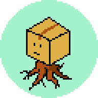

自己紹介
2児の父親兼ITエンジニアのふぉれすけです。
ゲームやお酒が大好きで、Podcastをよく聴いています。
ブログ
- すけログ - 技術やら漫画の感想やら、色々書いてるブログです。
作ったもの
- Code Wave - マトリックス風にメッセージを投稿するツールです。
- Loading UX Tester - 待ち時間とUIの影響を確認するページです。
- 開発の友 - 仕事などで使える便利ツールを色々と作っています。 ソースコードはこちらで公開中です。
SNSアカウント集
あまり活動できていないSNSアカウント達。
中央集権じゃない分散型SNSが流行るんでしょうか、それとも…
招待コードを申込んでから数ヶ月後に発行されたBlueskyアカウント
ブログの記事を置くことがメインになりつつあるGithub
2017年に登録したがほぼ使っていないマストドンアカウト
たまに覗いてタイムラインの投稿にリアクションするだけのmisskeyアカウント
ROM専になりかけているDiscordアカウント
ふぉれすけ
ふぉれすけ
遊ぶより買う頻度が高いSteamアカウント
REMOTE PLAY TOGETHERでさくっと遊ぶのが好き。
REMOTE PLAY TOGETHERでさくっと遊ぶのが好き。
最近ご無沙汰な𝕏(旧Twitter)アカウント
一応登録したけど使いこなしていないthreadsアカウント